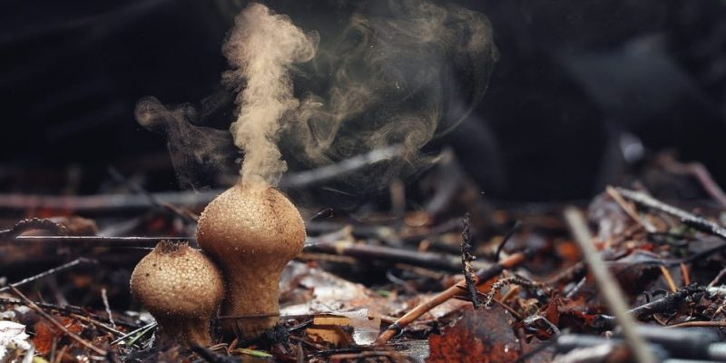
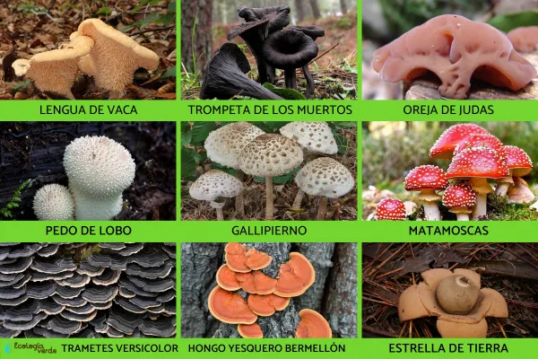

HONGOS

¿Qué son los hongos?
Los hongos son los seres vivos pertenecientes al reino fungi: los mohos, levaduras y setas. Este conjunto de seres vivos puede considerarse un reino intermedio entre plantas y animales, de los cuales se separó hace más de un millón de años, dado que sus integrantes llevan vidas inmóviles e insensibles como las plantas, pero poseen una nutrición heterótrofa como los animales, o sea, consumen materia orgánica para subsistir.
Los hongos existen en prácticamente todos los hábitats, incluso algunos bajo el agua, y se conocen actualmente alrededor de 100.000 especies diferentes, del estimado de más de un millón de especies totales del planeta Tierra. Muchas de ellas son de inmensa utilidad en la industria, especialmente las levaduras, tanto en la gastronomía como en la farmacología, y muchas otras en cambio son causantes de enfermedades en personas y animales.
Reproducción de los hongos
Los hongos se reproducen a través de esporas, que son formas resistentes al entorno capaces de perdurar, esperando al momento en que las condiciones sean propicias para germinar. Dichas esporas pueden producirse sexual o asexualmente, en órganos conocidos como esporangios, y son liberados al entorno, donde el viento, el agua y otros factores ambientales contribuyen a dispersarlas.
Tipos de hongos
La clasificación de los hongos ha variado mucho en el tiempo, a medida que se conoce más y mejor sobre estos seres vivos tan peculiares. En general, se diferencian los siguientes cinco grandes tipos de hongos:
Basidiomicetos:hongos que desarrollan setas, de las cuales nacen las esporas del hongo.
Ascomicetos:hongos que en vez de setas tienen ascas, que son células sexuales productoras de esporas.
Glomeromicetos:conocidos como micorrizas, o sea, uniones simbióticas entre un hongo y las raíces de una planta, en las que se intercambia agua y nutrientes, por carbohidratos que el hongo no puede sintetizar.
